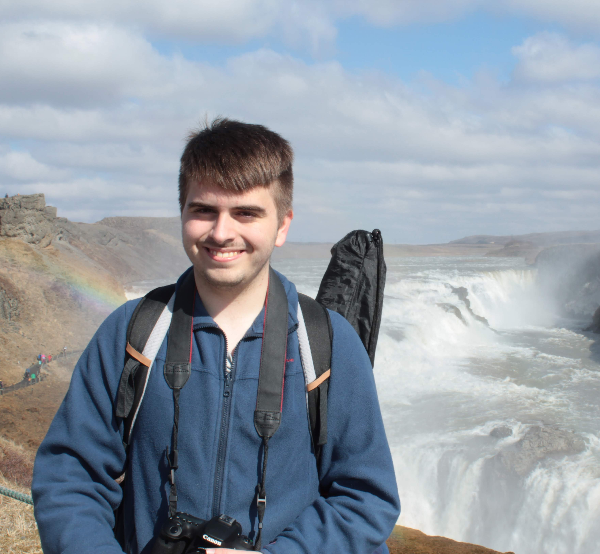

Jorge L. Rodríguez-Monteverde
Friedrich-Schiller-Universität, Jena (DE)
Guest Researcher (Erasmus+) working on neutron star stability.
IFT/UAM-CSIC, Madrid (ES)
MSc in Theoretical Physics: Elementary Particles and Cosmology.
Stockholms Universitet, Stockholm (SE)
Erasmus+ with Civis.
Universidad Autónoma de Madrid, Madrid (ES)
BSc in Physics.
Born in Villanueva del Pardillo, Madrid (ES)
About Me
I am Jorge, a physics enthusiast with interests in Gravitation and Cosmology. I also have a keen interest in satellite and space-borne missions, as well as numerical simulations and data analysis.
I successfully defended my End-Degree-Project (05/2024) and my Master Thesis (07/2025) in collaboration with the IFT in Madrid, using the Einstein Toolkit to make realistic simulations of black hole binaries, dynamical captures and hyperbolic encounters. These projects led to a published paper and a recently submitted work to the arXiv.
After my education in Madrid, I moved to Jena (Germany) as a visitor student to expand my knowledge on Numerical Relativity under the guidance of Professor Sebastiano Bernuzzi.
Outside of physics, I enjoy reading fantasy books and playing music on my flute and cello. I love spending time outdoors doing wildlife and landscape photography, kayaking, and running a YouTube channel where I share physics simulations — now with over 4k subscribers and 420k views.